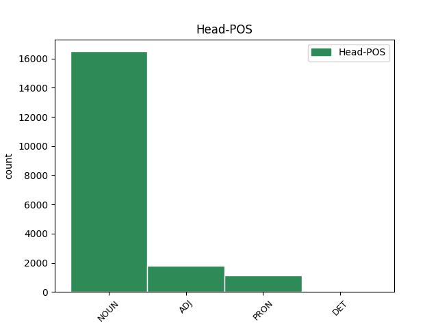

Distribution of features within this leaf

Agreement Rules sorted by frequency.
- When the dependent token is the modifer(mod) of the head token, and the head token is NOUN and the dependent token is ADJ.
1 καὶ _ _ _ _ 0 _ _ _
2 σὸν σός ADJ a-s---ma- Case=Acc|Gender=Masc|Number=Sing 4 mod _ _
3 διδάξω _ _ _ _ 0 _ _ _
4 πατέρα πατήρ NOUN n-s---ma- Case=Acc|Gender=Masc|Number=Sing 0 _ _ _
5 ποῖα _ _ _ _ 0 _ _ _
6 χρὴ _ _ _ _ 0 _ _ _
7 λέγειν _ _ _ _ 0 _ _ _
8 . _ _ _ _ 0 _ _ _
1 εὖ _ _ _ _ 0 _ _ _
2 γὰρ _ _ _ _ 0 _ _ _
3 ὁ ὁ DET l-s---mn- Case=Nom|Gender=Masc|Number=Sing 4 det _ _
4 ξένος ξένος NOUN n-s---mn- Case=Nom|Gender=Masc|Number=Sing 0 _ _ _
5 λέγει _ _ _ _ 0 _ _ _
6 . _ _ _ _ 0 _ _ _
1 ἐγὼ _ _ _ _ 0 _ _ _
2 δὲ _ _ _ _ 0 _ _ _
3 λαοὺς _ _ _ _ 0 _ _ _
4 συγκαλῶν _ _ _ _ 0 _ _ _
5 ἐγχωρίους _ _ _ _ 0 _ _ _
6 στείχω _ _ _ _ 0 _ _ _
7 , _ _ _ _ 0 _ _ _
8 τὸ ὁ DET l-s---na- Case=Acc|Gender=Neut|Number=Sing 9 det _ _
9 κοινὸν κοινός ADJ a-s---na- Case=Acc|Gender=Neut|Number=Sing 0 _ _ _
10 ὡς _ _ _ _ 0 _ _ _
11 ἂν _ _ _ _ 0 _ _ _
12 εὐμενὲς _ _ _ _ 0 _ _ _
13 τιθῶ _ _ _ _ 0 _ _ _
14 · _ _ _ _ 0 _ _ _
1 πολλῶν _ _ _ _ 0 _ _ _
2 τάδ̓ _ _ _ _ 0 _ _ _
3 ἡμῖν _ _ _ _ 0 _ _ _
4 ἐστιν _ _ _ _ 0 _ _ _
5 ἠξιωμένα _ _ _ _ 0 _ _ _
6 , _ _ _ _ 0 _ _ _
7 αἰδοῖον _ _ _ _ 0 _ _ _
8 εὑρεθέντα εὑρίσκω VERB v-sappma- Case=Acc|Gender=Masc|Number=Sing|Tense=Past|VerbForm=Part|Voice=Pass 9 mod _ _
9 πρόξενον πρόξενος NOUN n-s---ma- Case=Acc|Gender=Masc|Number=Sing 0 _ _ _
10 λαβεῖν _ _ _ _ 0 _ _ _
11 . _ _ _ _ 0 _ _ _
1 ὅπως _ _ _ _ 0 _ _ _
2 δ̓ _ _ _ _ 0 _ _ _
3 ὅμαιμον _ _ _ _ 0 _ _ _
4 αἷμα _ _ _ _ 0 _ _ _
5 μὴ _ _ _ _ 0 _ _ _
6 γενήσεται _ _ _ _ 0 _ _ _
7 , _ _ _ _ 0 _ _ _
8 δεῖ _ _ _ _ 0 _ _ _
9 κάρτα _ _ _ _ 0 _ _ _
10 θύειν _ _ _ _ 0 _ _ _
11 καὶ _ _ _ _ 0 _ _ _
12 πεσεῖν _ _ _ _ 0 _ _ _
13 χρηστήρια χρηστήριος ADJ a-p---na- Case=Acc|Gender=Neut|Number=Plur 0 _ _ _
14 θεοῖσι _ _ _ _ 0 _ _ _
15 πολλοῖς _ _ _ _ 0 _ _ _
16 πολλά πολύς ADJ a-p---na- Case=Acc|Gender=Neut|Number=Plur 13 mod _ SpaceAfter=No
17 , _ _ _ _ 0 _ _ _
18 πημονῆς _ _ _ _ 0 _ _ _
19 ἄκη _ _ _ _ 0 _ _ _
20 . _ _ _ _ 0 _ _ _
1 καὶ _ _ _ _ 0 _ _ _
2 ξυμβολοῦσιν _ _ _ _ 0 _ _ _
3 οὐ _ _ _ _ 0 _ _ _
4 πολυστομεῖν _ _ _ _ 0 _ _ _
5 χρεὼν _ _ _ _ 0 _ _ _
6 ναύτην ναύτης NOUN n-s---ma- Case=Acc|Gender=Masc|Number=Sing 0 _ _ _
7 ἄγοντας _ _ _ _ 0 _ _ _
8 τόνδ̓ _ _ _ _ 0 _ _ _
9 ἐφέστιον ἐφέστιος ADJ a-s---ma- Case=Acc|Gender=Masc|Number=Sing 6 comp:pred _ _
10 θεῶν _ _ _ _ 0 _ _ _
11 . _ _ _ _ 0 _ _ _
1 τοῖς _ _ _ _ 0 _ _ _
2 ἥσσοσιν _ _ _ _ 0 _ _ _
3 γὰρ _ _ _ _ 0 _ _ _
4 πᾶς πᾶς ADJ a-s---mn- Case=Nom|Gender=Masc|Number=Sing 5 mod _ _
5 τις τις PRON p-s---mn- Case=Nom|Gender=Masc|Number=Sing 0 _ _ _
6 εὐνοίας _ _ _ _ 0 _ _ _
7 φέρει _ _ _ _ 0 _ _ _
8 . _ _ _ _ 0 _ _ _
1 πλάτα _ _ _ _ 0 _ _ _
2 μὲν _ _ _ _ 0 _ _ _
3 οὖν _ _ _ _ 0 _ _ _
4 λινορραφής _ _ _ _ 0 _ _ _
5 τε _ _ _ _ 0 _ _ _
6 δόμος _ _ _ _ 0 _ _ _
7 ἅλα _ _ _ _ 0 _ _ _
8 στέγων _ _ _ _ 0 _ _ _
9 δορὸς _ _ _ _ 0 _ _ _
10 ἀχείματόν ἀχείματος ADJ a-s---fa- Case=Acc|Gender=Fem|Number=Sing 11 comp:pred _ _
11 μ̓ ἐγώ PRON p-s---fa- Case=Acc|Gender=Fem|Number=Sing 0 _ _ _
12 ἔπεμπε _ _ _ _ 0 _ _ _
13 σὺν _ _ _ _ 0 _ _ _
14 πνοαῖς _ _ _ _ 0 _ _ _
15 · _ _ _ _ 0 _ _ _
1 καὶ _ _ _ _ 0 _ _ _
2 μὴ _ _ _ _ 0 _ _ _
3 πρόλεσχος πρόλεσχος ADJ a-s---fn- Case=Nom|Gender=Fem|Number=Sing 0 _ _ _
4 μη _ _ _ _ 0 _ _ _
5 δ̓ _ _ _ _ 0 _ _ _
6 ἐφολκὸς ἐφολκός ADJ a-s---fn- Case=Nom|Gender=Fem|Number=Sing 3 conj _ _
7 ἐν _ _ _ _ 0 _ _ _
8 λόγῳ _ _ _ _ 0 _ _ _
9 γένῃ _ _ _ _ 0 _ _ _
10 . _ _ _ _ 0 _ _ _
1 τούτων _ _ _ _ 0 _ _ _
2 δὲ _ _ _ _ 0 _ _ _
3 ἀπιστούντων _ _ _ _ 0 _ _ _
4 διὰ _ _ _ _ 0 _ _ _
5 τὸ _ _ _ _ 0 _ _ _
6 ἀνεῳγμένας _ _ _ _ 0 _ _ _
7 αὐτοῖς _ _ _ _ 0 _ _ _
8 τὰς _ _ _ _ 0 _ _ _
9 ἐπιστολὰς _ _ _ _ 0 _ _ _
10 ἀναδεδόσθαι _ _ _ _ 0 _ _ _
11 , _ _ _ _ 0 _ _ _
12 καὶ _ _ _ _ 0 _ _ _
13 πίστιν _ _ _ _ 0 _ _ _
14 ἑτέραν _ _ _ _ 0 _ _ _
15 βεβαιοτέραν _ _ _ _ 0 _ _ _
16 ζητούντων _ _ _ _ 0 _ _ _
17 , _ _ _ _ 0 _ _ _
18 ἐπηγγείλατο _ _ _ _ 0 _ _ _
19 παραδώσειν _ _ _ _ 0 _ _ _
20 αὐτὸν αὐτός PRON p-s---ma- Case=Acc|Gender=Masc|Number=Sing 0 _ _ _
21 ὁμολογοῦντα ὁμολογέω VERB v-sppama- Case=Acc|Gender=Masc|Number=Sing|Tense=Pres|VerbForm=Part|Voice=Act 20 comp:pred _ SpaceAfter=No
22 . _ _ _ _ 0 _ _ _
1 μή _ _ _ _ 0 _ _ _
2 τι _ _ _ _ 0 _ _ _
3 τλῇς _ _ _ _ 0 _ _ _
4 τὰν _ _ _ _ 0 _ _ _
5 ἱκέτιν ἱκέτις NOUN n-s---fa- Case=Acc|Gender=Fem|Number=Sing 0 _ _ _
6 εἰσιδεῖν _ _ _ _ 0 _ _ _
7 ἀπὸ _ _ _ _ 0 _ _ _
8 βρετέων _ _ _ _ 0 _ _ _
9 βίᾳ _ _ _ _ 0 _ _ _
10 δίκας _ _ _ _ 0 _ _ _
11 ἀγομέναν ἄγω VERB v-sppefa- Case=Acc|Gender=Fem|Number=Sing|Tense=Pres|VerbForm=Part|Voice=Mid 5 comp:pred _ _
12 ἱππηδὸν _ _ _ _ 0 _ _ _
13 ἀμπύκων _ _ _ _ 0 _ _ _
14 , _ _ _ _ 0 _ _ _
15 πολυμίτων _ _ _ _ 0 _ _ _
16 πέπλων _ _ _ _ 0 _ _ _
17 τ̓ _ _ _ _ 0 _ _ _
18 ἐπιλαβὰς _ _ _ _ 0 _ _ _
19 ἐμῶν _ _ _ _ 0 _ _ _
20 . _ _ _ _ 0 _ _ _
1 ἅμα _ _ _ _ 0 _ _ _
2 δὲ _ _ _ _ 0 _ _ _
3 τούτοις οὗτος PRON p-p---nd- Case=Dat|Gender=Neut|Number=Plur 0 _ _ _
4 πραττομένοις πράσσω VERB v-pppend- Case=Dat|Gender=Neut|Number=Plur|Tense=Pres|VerbForm=Part|Voice=Mid 3 mod _ _
5 Ἀκραγαντῖνοι _ _ _ _ 0 _ _ _
6 τὸ _ _ _ _ 0 _ _ _
7 Μότυον _ _ _ _ 0 _ _ _
8 φρούριον _ _ _ _ 0 _ _ _
9 κατεχόμενον _ _ _ _ 0 _ _ _
10 ὑπὸ _ _ _ _ 0 _ _ _
11 τῶν _ _ _ _ 0 _ _ _
12 μετὰ _ _ _ _ 0 _ _ _
13 Δουκετίου _ _ _ _ 0 _ _ _
14 Σικελῶν _ _ _ _ 0 _ _ _
15 ἐξεπολιόρκησαν _ _ _ _ 0 _ _ _
16 , _ _ _ _ 0 _ _ _
17 καὶ _ _ _ _ 0 _ _ _
18 τὴν _ _ _ _ 0 _ _ _
19 δύναμιν _ _ _ _ 0 _ _ _
20 ἀπαγαγόντες _ _ _ _ 0 _ _ _
21 πρὸς _ _ _ _ 0 _ _ _
22 τοὺς _ _ _ _ 0 _ _ _
23 Συρακοσίους _ _ _ _ 0 _ _ _
24 νενικηκότας _ _ _ _ 0 _ _ _
25 ἤδη _ _ _ _ 0 _ _ _
26 κοινῇ _ _ _ _ 0 _ _ _
27 κατεστρατοπέδευσαν _ _ _ _ 0 _ _ _
28 . _ _ _ _ 0 _ _ _
1 πρύτανις _ _ _ _ 0 _ _ _
2 ἄκριτος _ _ _ _ 0 _ _ _
3 ὤν _ _ _ _ 0 _ _ _
4 , _ _ _ _ 0 _ _ _
5 κρατύνεις _ _ _ _ 0 _ _ _
6 βωμόν βωμός NOUN n-s---ma- Case=Acc|Gender=Masc|Number=Sing 0 _ _ _
7 , _ _ _ _ 0 _ _ _
8 ἑστίαν ἕστιος ADJ a-s---fa- Case=Acc|Gender=Fem|Number=Sing 6 conj _ _
9 χθονός _ _ _ _ 0 _ _ _
10 , _ _ _ _ 0 _ _ _
11 μονοψήφοισι _ _ _ _ 0 _ _ _
12 νεύμασιν _ _ _ _ 0 _ _ _
13 σέθεν _ _ _ _ 0 _ _ _
14 , _ _ _ _ 0 _ _ _
15 μονοσκήπτροισι _ _ _ _ 0 _ _ _
16 δ̓ _ _ _ _ 0 _ _ _
17 ἐν _ _ _ _ 0 _ _ _
18 θρόνοις _ _ _ _ 0 _ _ _
19 χρέος _ _ _ _ 0 _ _ _
20 πᾶν _ _ _ _ 0 _ _ _
21 ἐπικραίνεις _ _ _ _ 0 _ _ _
22 · _ _ _ _ 0 _ _ _
1 ὁμοίως _ _ _ _ 0 _ _ _
2 δὲ _ _ _ _ 0 _ _ _
3 καὶ _ _ _ _ 0 _ _ _
4 ταύτην _ _ _ _ 0 _ _ _
5 ἐξ _ _ _ _ 0 _ _ _
6 ἐφόδου _ _ _ _ 0 _ _ _
7 λαβών _ _ _ _ 0 _ _ _
8 , _ _ _ _ 0 _ _ _
9 κατῴκισεν _ _ _ _ 0 _ _ _
10 εἰς _ _ _ _ 0 _ _ _
11 ταύτην _ _ _ _ 0 _ _ _
12 Μεσσηνίων _ _ _ _ 0 _ _ _
13 τοὺς _ _ _ _ 0 _ _ _
14 ἐπισήμους ἐπίσημος ADJ a-p---ma- Case=Acc|Gender=Masc|Number=Plur 0 _ _ _
15 , _ _ _ _ 0 _ _ _
16 ὑποσπόνδους _ _ _ _ 0 _ _ _
17 ὑπὸ _ _ _ _ 0 _ _ _
18 Λακεδαιμονίων _ _ _ _ 0 _ _ _
19 ἀφεθέντας ἀφίημι VERB v-pappma- Case=Acc|Gender=Masc|Number=Plur|Tense=Past|VerbForm=Part|Voice=Pass 14 mod _ SpaceAfter=No
20 · _ _ _ _ 0 _ _ _
1 μυθολογοῦσι _ _ _ _ 0 _ _ _
2 γὰρ _ _ _ _ 0 _ _ _
3 τὸ _ _ _ _ 0 _ _ _
4 τέμενος _ _ _ _ 0 _ _ _
5 τοῦτο _ _ _ _ 0 _ _ _
6 διαφέρειν _ _ _ _ 0 _ _ _
7 τῶν ὁ DET l-p---ng- Case=Gen|Gender=Neut|Number=Plur 8 det _ _
8 ἄλλων ἄλλος PRON p-p---ng- Case=Gen|Gender=Neut|Number=Plur 0 _ _ _
9 ἀρχαιότητι _ _ _ _ 0 _ _ _
10 καὶ _ _ _ _ 0 _ _ _
11 σεβασμῷ _ _ _ _ 0 _ _ _
12 , _ _ _ _ 0 _ _ _
13 πολλῶν _ _ _ _ 0 _ _ _
14 ἐν _ _ _ _ 0 _ _ _
15 αὐτῷ _ _ _ _ 0 _ _ _
16 παραδόξων _ _ _ _ 0 _ _ _
17 παραδεδομένων _ _ _ _ 0 _ _ _
18 . _ _ _ _ 0 _ _ _
1 καὶ _ _ _ _ 0 _ _ _
2 ταῦτ̓ οὗτος ADJ a-p---na- Case=Acc|Gender=Neut|Number=Plur 0 _ _ _
3 ἀληθῆ ἀληθής ADJ a-p---na- Case=Acc|Gender=Neut|Number=Plur 2 comp:pred _ _
4 πάντα _ _ _ _ 0 _ _ _
5 προσφύσω _ _ _ _ 0 _ _ _
6 λόγῳ _ _ _ _ 0 _ _ _
7 . _ _ _ _ 0 _ _ _
1 εἰ _ _ _ _ 0 _ _ _
2 κεῖνόν ἐκεῖνος ADJ a-s---ma- Case=Acc|Gender=Masc|Number=Sing 0 _ _ _
3 γε _ _ _ _ 0 _ _ _
4 ἴδοιμι _ _ _ _ 0 _ _ _
5 κατελθόντ̓ κατέρχομαι VERB v-sapama- Case=Acc|Gender=Masc|Number=Sing|Tense=Past|VerbForm=Part|Voice=Act 2 comp:pred _ _
6 Ἄϊδος _ _ _ _ 0 _ _ _
7 εἴσω _ _ _ _ 0 _ _ _
8 φαίην _ _ _ _ 0 _ _ _
9 κε _ _ _ _ 0 _ _ _
10 φρέν̓ _ _ _ _ 0 _ _ _
11 ἀτέρπου _ _ _ _ 0 _ _ _
12 ὀϊζύος _ _ _ _ 0 _ _ _
13 ἐκλελαθέσθαι _ _ _ _ 0 _ _ _
14 . _ _ _ _ 0 _ _ _
1 ὁ _ _ _ _ 0 _ _ _
2 δὲ _ _ _ _ 0 _ _ _
3 Τολμίδης _ _ _ _ 0 _ _ _
4 σπεύδων _ _ _ _ 0 _ _ _
5 μὴ _ _ _ _ 0 _ _ _
6 μόνον _ _ _ _ 0 _ _ _
7 τοὺς _ _ _ _ 0 _ _ _
8 τεταγμένους _ _ _ _ 0 _ _ _
9 χιλίους _ _ _ _ 0 _ _ _
10 ἐξαγαγεῖν _ _ _ _ 0 _ _ _
11 εἰς _ _ _ _ 0 _ _ _
12 τὴν _ _ _ _ 0 _ _ _
13 στρατείαν _ _ _ _ 0 _ _ _
14 , _ _ _ _ 0 _ _ _
15 προσιὼν _ _ _ _ 0 _ _ _
16 ἑκάστῳ _ _ _ _ 0 _ _ _
17 τῶν _ _ _ _ 0 _ _ _
18 νέων νέος ADJ a-p---mg- Case=Gen|Gender=Masc|Number=Plur 0 _ _ _
19 καὶ _ _ _ _ 0 _ _ _
20 τῇ _ _ _ _ 0 _ _ _
21 ῥώμῃ _ _ _ _ 0 _ _ _
22 διαφερόντων διαφέρω VERB v-pppamg- Case=Gen|Gender=Masc|Number=Plur|Tense=Pres|VerbForm=Part|Voice=Act 18 conj _ _
23 ἔλεγεν _ _ _ _ 0 _ _ _
24 ὡς _ _ _ _ 0 _ _ _
25 μέλλει _ _ _ _ 0 _ _ _
26 καταλέγειν _ _ _ _ 0 _ _ _
27 αὐτόν _ _ _ _ 0 _ _ _
28 · _ _ _ _ 0 _ _ _
1 οἱ _ _ _ _ 0 _ _ _
2 Φωκεῖς _ _ _ _ 0 _ _ _
3 ἐνεστήσαντο _ _ _ _ 0 _ _ _
4 πόλεμον _ _ _ _ 0 _ _ _
5 πρὸς _ _ _ _ 0 _ _ _
6 Δωριεῖς _ _ _ _ 0 _ _ _
7 , _ _ _ _ 0 _ _ _
8 τοὺς _ _ _ _ 0 _ _ _
9 προγόνους πρόγονος NOUN n-p---ma- Case=Acc|Gender=Masc|Number=Plur 0 _ _ _
10 μὲν _ _ _ _ 0 _ _ _
11 Λακεδαιμονίων _ _ _ _ 0 _ _ _
12 , _ _ _ _ 0 _ _ _
13 οἰκοῦντας οἰκέω VERB v-pppama- Case=Acc|Gender=Masc|Number=Plur|Tense=Pres|VerbForm=Part|Voice=Act 9 conj _ _
14 δὲ _ _ _ _ 0 _ _ _
15 πόλεις _ _ _ _ 0 _ _ _
16 τρεῖς _ _ _ _ 0 _ _ _
17 , _ _ _ _ 0 _ _ _
18 Κυτίνιον _ _ _ _ 0 _ _ _
19 καὶ _ _ _ _ 0 _ _ _
20 Βοιὸν _ _ _ _ 0 _ _ _
21 καὶ _ _ _ _ 0 _ _ _
22 Ἐρινεόν _ _ _ _ 0 _ _ _
23 , _ _ _ _ 0 _ _ _
24 κειμένας _ _ _ _ 0 _ _ _
25 ὑπὸ _ _ _ _ 0 _ _ _
26 τὸν _ _ _ _ 0 _ _ _
27 λόφον _ _ _ _ 0 _ _ _
28 τὸν _ _ _ _ 0 _ _ _
29 ὀνομαζόμενον _ _ _ _ 0 _ _ _
30 Παρνασσόν _ _ _ _ 0 _ _ _
31 . _ _ _ _ 0 _ _ _
1 ζηλώσαντος _ _ _ _ 0 _ _ _
2 γὰρ _ _ _ _ 0 _ _ _
3 αὐτοῦ _ _ _ _ 0 _ _ _
4 τὴν _ _ _ _ 0 _ _ _
5 Περσικὴν _ _ _ _ 0 _ _ _
6 τρυφὴν _ _ _ _ 0 _ _ _
7 καὶ _ _ _ _ 0 _ _ _
8 τυραννικῶς _ _ _ _ 0 _ _ _
9 προσφερομένου _ _ _ _ 0 _ _ _
10 τοῖς _ _ _ _ 0 _ _ _
11 ὑποτεταγμένοις _ _ _ _ 0 _ _ _
12 , _ _ _ _ 0 _ _ _
13 χαλεπῶς _ _ _ _ 0 _ _ _
14 ἔφερον _ _ _ _ 0 _ _ _
15 ἅπαντες _ _ _ _ 0 _ _ _
16 , _ _ _ _ 0 _ _ _
17 μάλιστα _ _ _ _ 0 _ _ _
18 δὲ _ _ _ _ 0 _ _ _
19 οἱ ὁ DET l-p---mn- Case=Nom|Gender=Masc|Number=Plur 0 _ _ _
20 τεταγμένοι τάσσω VERB v-prpemn- Aspect=Perf|Case=Nom|Gender=Masc|Number=Plur|Tense=Past|VerbForm=Part|Voice=Mid 19 mod _ _
21 τῶν _ _ _ _ 0 _ _ _
22 Ἑλλήνων _ _ _ _ 0 _ _ _
23 ἐπί _ _ _ _ 0 _ _ _
24 τινος _ _ _ _ 0 _ _ _
25 ἡγεμονίας _ _ _ _ 0 _ _ _
26 . _ _ _ _ 0 _ _ _
1 Δημήτηρ Δημήτηρ NOUN n-s---fn- Case=Nom|Gender=Fem|Number=Sing 0 _ _ _
2 μὲν _ _ _ _ 0 _ _ _
3 Πλοῦτον _ _ _ _ 0 _ _ _
4 ἐγείνατο _ _ _ _ 0 _ _ _
5 , _ _ _ _ 0 _ _ _
6 δῖα δῖος ADJ a-s---fn- Case=Nom|Gender=Fem|Number=Sing 1 appos _ _
7 θεάων _ _ _ _ 0 _ _ _
8 , _ _ _ _ 0 _ _ _
9 Ἰασίων̓ _ _ _ _ 0 _ _ _
10 ἥρωι _ _ _ _ 0 _ _ _
11 μιγεῖσ̓ _ _ _ _ 0 _ _ _
12 ἐρατῇ _ _ _ _ 0 _ _ _
13 φιλότητι _ _ _ _ 0 _ _ _
14 νειῷ _ _ _ _ 0 _ _ _
15 ἔνι _ _ _ _ 0 _ _ _
16 τριπόλῳ _ _ _ _ 0 _ _ _
17 , _ _ _ _ 0 _ _ _
18 Κρήτης _ _ _ _ 0 _ _ _
19 ἐν _ _ _ _ 0 _ _ _
20 πίονι _ _ _ _ 0 _ _ _
21 δήμῳ _ _ _ _ 0 _ _ _
22 , _ _ _ _ 0 _ _ _
23 ἐσθλόν _ _ _ _ 0 _ _ _
24 , _ _ _ _ 0 _ _ _
25 ὃς _ _ _ _ 0 _ _ _
26 εἶσ̓ _ _ _ _ 0 _ _ _
27 ἐπὶ _ _ _ _ 0 _ _ _
28 γῆν _ _ _ _ 0 _ _ _
29 τε _ _ _ _ 0 _ _ _
30 καὶ _ _ _ _ 0 _ _ _
31 εὐρέα _ _ _ _ 0 _ _ _
32 νῶτα _ _ _ _ 0 _ _ _
33 θαλάσσης _ _ _ _ 0 _ _ _
34 πάντη _ _ _ _ 0 _ _ _
35 · _ _ _ _ 0 _ _ _
1 ὁμοίως _ _ _ _ 0 _ _ _
2 δὲ _ _ _ _ 0 _ _ _
3 τοῖς _ _ _ _ 0 _ _ _
4 Καρχηδονίοις _ _ _ _ 0 _ _ _
5 τριετῆ _ _ _ _ 0 _ _ _
6 χρόνον _ _ _ _ 0 _ _ _
7 παρασκευασάμενος _ _ _ _ 0 _ _ _
8 κατεσκεύασε _ _ _ _ 0 _ _ _
9 ναῦς _ _ _ _ 0 _ _ _
10 μακρὰς _ _ _ _ 0 _ _ _
11 πλείους _ _ _ _ 0 _ _ _
12 τῶν ὁ DET l-p---fg- Case=Gen|Gender=Fem|Number=Plur 0 _ _ _
13 χιλίων χίλιοι ADJ a-p---fg- Case=Gen|Gender=Fem|Number=Plur 12 mod _ _
14 καὶ _ _ _ _ 0 _ _ _
15 διακοσίων _ _ _ _ 0 _ _ _
16 . _ _ _ _ 0 _ _ _
1 πάντων _ _ _ _ 0 _ _ _
2 δὲ _ _ _ _ 0 _ _ _
3 πρὸς _ _ _ _ 0 _ _ _
4 τὸν _ _ _ _ 0 _ _ _
5 πυρσὸν _ _ _ _ 0 _ _ _
6 ἀθροισθέντων _ _ _ _ 0 _ _ _
7 καὶ _ _ _ _ 0 _ _ _
8 παυσαμένων _ _ _ _ 0 _ _ _
9 τῆς _ _ _ _ 0 _ _ _
10 ἁρπαγῆς _ _ _ _ 0 _ _ _
11 , _ _ _ _ 0 _ _ _
12 τότε _ _ _ _ 0 _ _ _
13 μὲν _ _ _ _ 0 _ _ _
14 εἰς _ _ _ _ 0 _ _ _
15 τὰς _ _ _ _ 0 _ _ _
16 ναῦς _ _ _ _ 0 _ _ _
17 ἀπεχώρησαν _ _ _ _ 0 _ _ _
18 , _ _ _ _ 0 _ _ _
19 τῇ _ _ _ _ 0 _ _ _
20 δ̓ _ _ _ _ 0 _ _ _
21 ὑστεραίᾳ _ _ _ _ 0 _ _ _
22 τρόπαιον _ _ _ _ 0 _ _ _
23 στήσαντες _ _ _ _ 0 _ _ _
24 ἀπέπλευσαν _ _ _ _ 0 _ _ _
25 εἰς _ _ _ _ 0 _ _ _
26 τὴν _ _ _ _ 0 _ _ _
27 Κύπρον _ _ _ _ 0 _ _ _
28 , _ _ _ _ 0 _ _ _
29 νενικηκότες _ _ _ _ 0 _ _ _
30 δύο _ _ _ _ 0 _ _ _
31 καλλίστας _ _ _ _ 0 _ _ _
32 νίκας _ _ _ _ 0 _ _ _
33 , _ _ _ _ 0 _ _ _
34 τὴν ὁ DET l-s---fa- Case=Acc|Gender=Fem|Number=Sing 0 _ _ _
35 μὲν _ _ _ _ 0 _ _ _
36 κατὰ _ _ _ _ 0 _ _ _
37 γῆν _ _ _ _ 0 _ _ _
38 , _ _ _ _ 0 _ _ _
39 τὴν ὁ DET l-s---fa- Case=Acc|Gender=Fem|Number=Sing 34 det _ _
40 δὲ _ _ _ _ 0 _ _ _
41 κατὰ _ _ _ _ 0 _ _ _
42 θάλατταν _ _ _ _ 0 _ _ _
43 · _ _ _ _ 0 _ _ _
1 τὴν _ _ _ _ 0 _ _ _
2 μέν _ _ _ _ 0 _ _ _
3 κεν _ _ _ _ 0 _ _ _
4 ἐπαινέσσειε _ _ _ _ 0 _ _ _
5 νοήσας _ _ _ _ 0 _ _ _
6 , _ _ _ _ 0 _ _ _
7 ἣ ὅς PRON p-s---fn- Case=Nom|Gender=Fem|Number=Sing 0 _ _ _
8 δ̓ _ _ _ _ 0 _ _ _
9 ἐπιμωμητή ἐπιμωμητός ADJ a-s---fn- Case=Nom|Gender=Fem|Number=Sing 7 conj _ SpaceAfter=No
10 · _ _ _ _ 0 _ _ _
1 οἱ _ _ _ _ 0 _ _ _
2 δὲ _ _ _ _ 0 _ _ _
3 Δελφοὶ _ _ _ _ 0 _ _ _
4 τῆς _ _ _ _ 0 _ _ _
5 τῶν _ _ _ _ 0 _ _ _
6 θεῶν _ _ _ _ 0 _ _ _
7 ἐπιφανείας _ _ _ _ 0 _ _ _
8 ἀθάνατον _ _ _ _ 0 _ _ _
9 ὑπόμνημα _ _ _ _ 0 _ _ _
10 καταλιπεῖν _ _ _ _ 0 _ _ _
11 τοῖς _ _ _ _ 0 _ _ _
12 μεταγενεστέροις _ _ _ _ 0 _ _ _
13 βουλόμενοι _ _ _ _ 0 _ _ _
14 , _ _ _ _ 0 _ _ _
15 τρόπαιον _ _ _ _ 0 _ _ _
16 ἔστησαν _ _ _ _ 0 _ _ _
17 παρὰ _ _ _ _ 0 _ _ _
18 τὸ _ _ _ _ 0 _ _ _
19 τῆς _ _ _ _ 0 _ _ _
20 Προναίας _ _ _ _ 0 _ _ _
21 Ἀθηνᾶς _ _ _ _ 0 _ _ _
22 ἱερόν _ _ _ _ 0 _ _ _
23 , _ _ _ _ 0 _ _ _
24 ἐν _ _ _ _ 0 _ _ _
25 ᾧ _ _ _ _ 0 _ _ _
26 τόδε _ _ _ _ 0 _ _ _
27 τὸ _ _ _ _ 0 _ _ _
28 ἐλεγεῖον ἐλεγεῖον NOUN n-s---na- Case=Acc|Gender=Neut|Number=Sing 0 _ _ _
29 ἐνέγραψαν _ _ _ _ 0 _ _ _
30 , _ _ _ _ 0 _ _ _
31 μνᾶμά _ _ _ _ 0 _ _ _
32 τ̓ _ _ _ _ 0 _ _ _
33 ἀλεξάνδρου _ _ _ _ 0 _ _ _
34 πολέμου _ _ _ _ 0 _ _ _
35 καὶ _ _ _ _ 0 _ _ _
36 μάρτυρα _ _ _ _ 0 _ _ _
37 νίκας _ _ _ _ 0 _ _ _
38 Δελφοί _ _ _ _ 0 _ _ _
39 με _ _ _ _ 0 _ _ _
40 στᾶσαν ἵστημι VERB v-sapafa- Case=Acc|Gender=Fem|Number=Sing|Tense=Past|VerbForm=Part|Voice=Act 28 appos _ SpaceAfter=No
41 , _ _ _ _ 0 _ _ _
42 Ζανὶ _ _ _ _ 0 _ _ _
43 χαριζόμενοι _ _ _ _ 0 _ _ _
44 σὺν _ _ _ _ 0 _ _ _
45 Φοίβῳ _ _ _ _ 0 _ _ _
46 , _ _ _ _ 0 _ _ _
47 πτολίπορθον _ _ _ _ 0 _ _ _
48 ἀπωσαμένοις _ _ _ _ 0 _ _ _
49 στίχα _ _ _ _ 0 _ _ _
50 Μήδων _ _ _ _ 0 _ _ _
51 καὶ _ _ _ _ 0 _ _ _
52 χαλκοστέφανον _ _ _ _ 0 _ _ _
53 ῥυσαμένοις _ _ _ _ 0 _ _ _
54 τέμενος _ _ _ _ 0 _ _ _
55 . _ _ _ _ 0 _ _ _
1 ἡ _ _ _ _ 0 _ _ _
2 δὲ _ _ _ _ 0 _ _ _
3 ἀρτάβη _ _ _ _ 0 _ _ _
4 , _ _ _ _ 0 _ _ _
5 μέτρον _ _ _ _ 0 _ _ _
6 ἐὸν _ _ _ _ 0 _ _ _
7 Περσικόν _ _ _ _ 0 _ _ _
8 , _ _ _ _ 0 _ _ _
9 χωρέει _ _ _ _ 0 _ _ _
10 μεδίμνου _ _ _ _ 0 _ _ _
11 Ἀττικοῦ _ _ _ _ 0 _ _ _
12 πλέον _ _ _ _ 0 _ _ _
13 χοίνιξι χοῖνιξ NOUN n-p---fd- Case=Dat|Gender=Fem|Number=Plur 0 _ _ _
14 τρισὶ τρεῖς NUM m-p---md- Case=Dat|Gender=Masc|Number=Plur 13 mod _ _
15 Ἀττικῇσι _ _ _ _ 0 _ _ _
16 , _ _ _ _ 0 _ _ _
17 ἵπποι _ _ _ _ 0 _ _ _
18 δὲ _ _ _ _ 0 _ _ _
19 οἱ _ _ _ _ 0 _ _ _
20 αὐτοῦ _ _ _ _ 0 _ _ _
21 ἦσαν _ _ _ _ 0 _ _ _
22 ἰδίῃ _ _ _ _ 0 _ _ _
23 , _ _ _ _ 0 _ _ _
24 πάρεξ _ _ _ _ 0 _ _ _
25 τῶν _ _ _ _ 0 _ _ _
26 πολεμιστηρίων _ _ _ _ 0 _ _ _
27 , _ _ _ _ 0 _ _ _
28 οἱ _ _ _ _ 0 _ _ _
29 μὲν _ _ _ _ 0 _ _ _
30 ἀναβαίνοντες _ _ _ _ 0 _ _ _
31 τὰς _ _ _ _ 0 _ _ _
32 θηλέας _ _ _ _ 0 _ _ _
33 ὀκτακόσιοι _ _ _ _ 0 _ _ _
34 , _ _ _ _ 0 _ _ _
35 αἱ _ _ _ _ 0 _ _ _
36 δὲ _ _ _ _ 0 _ _ _
37 βαινόμεναι _ _ _ _ 0 _ _ _
38 ἑξακισχίλιαι _ _ _ _ 0 _ _ _
39 καὶ _ _ _ _ 0 _ _ _
40 μυρίαι _ _ _ _ 0 _ _ _
41 · _ _ _ _ 0 _ _ _
1 ἐπαρθεὶς _ _ _ _ 0 _ _ _
2 γὰρ _ _ _ _ 0 _ _ _
3 ταῖς _ _ _ _ 0 _ _ _
4 εὐτυχίαις _ _ _ _ 0 _ _ _
5 τὴν _ _ _ _ 0 _ _ _
6 μὲν _ _ _ _ 0 _ _ _
7 Λακωνικὴν _ _ _ _ 0 _ _ _
8 ἀγωγὴν _ _ _ _ 0 _ _ _
9 ἐστύγησε _ _ _ _ 0 _ _ _
10 , _ _ _ _ 0 _ _ _
11 τὴν _ _ _ _ 0 _ _ _
12 δὲ _ _ _ _ 0 _ _ _
13 τῶν _ _ _ _ 0 _ _ _
14 Περσῶν _ _ _ _ 0 _ _ _
15 ἀκολασίαν _ _ _ _ 0 _ _ _
16 καὶ _ _ _ _ 0 _ _ _
17 τρυφὴν _ _ _ _ 0 _ _ _
18 ἐμιμήσατο _ _ _ _ 0 _ _ _
19 , _ _ _ _ 0 _ _ _
20 ὃν _ _ _ _ 0 _ _ _
21 ἥκιστα _ _ _ _ 0 _ _ _
22 ἐχρῆν _ _ _ _ 0 _ _ _
23 ζηλῶσαι _ _ _ _ 0 _ _ _
24 τὰ τίς X x-p---nn- Case=Nom|Gender=Neut|Number=Plur 27 mod _ _
25 τῶν _ _ _ _ 0 _ _ _
26 βαρβάρων _ _ _ _ 0 _ _ _
27 ἐπιτηδεύματα ἐπιτήδευμα NOUN n-p---nn- Case=Nom|Gender=Neut|Number=Plur 0 _ _ _
28 · _ _ _ _ 0 _ _ _
1 ἔτι _ _ _ _ 0 _ _ _
2 γὰρ _ _ _ _ 0 _ _ _
3 θερμαὶ θερμός ADJ a-p---fn- Case=Nom|Gender=Fem|Number=Plur 4 subj _ _
4 σύριγγες σῦριγξ NOUN n-p---fn- Case=Nom|Gender=Fem|Number=Plur 0 _ _ _
5 ἄνω _ _ _ _ 0 _ _ _
6 φυσῶσι _ _ _ _ 0 _ _ _
7 μέλαν _ _ _ _ 0 _ _ _
8 μένος _ _ _ _ 0 _ _ _
9 . _ _ _ _ 0 _ _ _
1 μάχην _ _ _ _ 0 _ _ _
2 δ̓ _ _ _ _ 0 _ _ _
3 ἀμέγαρτον _ _ _ _ 0 _ _ _
4 ἔγειραν _ _ _ _ 0 _ _ _
5 πάντες πᾶς ADJ a-p---mn- Case=Nom|Gender=Masc|Number=Plur 0 _ _ _
6 , _ _ _ _ 0 _ _ _
7 θήλειαι θῆλυς ADJ a-p---fn- Case=Nom|Gender=Fem|Number=Plur 5 appos _ _
8 τε _ _ _ _ 0 _ _ _
9 καὶ _ _ _ _ 0 _ _ _
10 ἄρσενες _ _ _ _ 0 _ _ _
11 , _ _ _ _ 0 _ _ _
12 ἤματι _ _ _ _ 0 _ _ _
13 κείνῳ _ _ _ _ 0 _ _ _
14 , _ _ _ _ 0 _ _ _
15 Τιτῆνές _ _ _ _ 0 _ _ _
16 τε _ _ _ _ 0 _ _ _
17 θεοὶ _ _ _ _ 0 _ _ _
18 καὶ _ _ _ _ 0 _ _ _
19 ὅσοι _ _ _ _ 0 _ _ _
20 Κρόνου _ _ _ _ 0 _ _ _
21 ἐξεγένοντο _ _ _ _ 0 _ _ _
22 , _ _ _ _ 0 _ _ _
23 οὕς _ _ _ _ 0 _ _ _
24 τε _ _ _ _ 0 _ _ _
25 Ζεὺς _ _ _ _ 0 _ _ _
26 Ἐρέβευσφιν _ _ _ _ 0 _ _ _
27 ὑπὸ _ _ _ _ 0 _ _ _
28 χθονὸς _ _ _ _ 0 _ _ _
29 ἧκε _ _ _ _ 0 _ _ _
30 φόωσδε _ _ _ _ 0 _ _ _
31 δεινοί _ _ _ _ 0 _ _ _
32 τε _ _ _ _ 0 _ _ _
33 κρατεροί _ _ _ _ 0 _ _ _
34 τε _ _ _ _ 0 _ _ _
35 , _ _ _ _ 0 _ _ _
36 βίην _ _ _ _ 0 _ _ _
37 ὑπέροπλον _ _ _ _ 0 _ _ _
38 ἔχοντες _ _ _ _ 0 _ _ _
39 . _ _ _ _ 0 _ _ _
1 ἁγὼ ἐγώ PRON p-s---mn- Case=Nom|Gender=Masc|Number=Sing 0 _ _ _
2 δικαιῶν _ _ _ _ 0 _ _ _
3 μὴ _ _ _ _ 0 _ _ _
4 παῤ _ _ _ _ 0 _ _ _
5 ἀγγέλων _ _ _ _ 0 _ _ _
6 , _ _ _ _ 0 _ _ _
7 τέκνα _ _ _ _ 0 _ _ _
8 , _ _ _ _ 0 _ _ _
9 ἄλλων _ _ _ _ 0 _ _ _
10 ἀκούειν _ _ _ _ 0 _ _ _
11 αὐτὸς _ _ _ _ 0 _ _ _
12 ὧδ̓ _ _ _ _ 0 _ _ _
13 ἐλήλυθα _ _ _ _ 0 _ _ _
14 , _ _ _ _ 0 _ _ _
15 ὁ _ _ _ _ 0 _ _ _
16 πᾶσι _ _ _ _ 0 _ _ _
17 κλεινὸς _ _ _ _ 0 _ _ _
18 Οἰδίπους _ _ _ _ 0 _ _ _
19 καλούμενος καλέω VERB v-sppemn- Case=Nom|Gender=Masc|Number=Sing|Tense=Pres|VerbForm=Part|Voice=Mid 1 appos _ SpaceAfter=No
20 . _ _ _ _ 0 _ _ _
1 τοῖσι ὁ DET l-p---md- Case=Dat|Gender=Masc|Number=Plur 0 _ _ _
2 δὲ _ _ _ _ 0 _ _ _
3 μαρναμένοισιν μάρναμαι VERB v-pppemd- Case=Dat|Gender=Masc|Number=Plur|Tense=Pres|VerbForm=Part|Voice=Mid 1 comp:pred _ _
4 ὅδ̓ _ _ _ _ 0 _ _ _
5 ἦν _ _ _ _ 0 _ _ _
6 νόος _ _ _ _ 0 _ _ _
7 · _ _ _ _ 0 _ _ _
1 ὤνθρωπε _ _ _ _ 0 _ _ _
2 , _ _ _ _ 0 _ _ _
3 τίς τις PRON p-s---mn- Case=Nom|Gender=Masc|Number=Sing 0 _ _ _
4 τε _ _ _ _ 0 _ _ _
5 ἐὼν _ _ _ _ 0 _ _ _
6 καὶ _ _ _ _ 0 _ _ _
7 κόθεν _ _ _ _ 0 _ _ _
8 τῆς _ _ _ _ 0 _ _ _
9 Φρυγίης _ _ _ _ 0 _ _ _
10 ἥκων ἥκω VERB v-sppamn- Case=Nom|Gender=Masc|Number=Sing|Tense=Pres|VerbForm=Part|Voice=Act 3 conj _ _
11 ἐπίστιός _ _ _ _ 0 _ _ _
12 μοι _ _ _ _ 0 _ _ _
13 ἐγένεο _ _ _ _ 0 _ _ _
14 ; _ _ _ _ 0 _ _ _
1 τῇ ὁ DET l-s---fd- Case=Dat|Gender=Fem|Number=Sing 0 _ _ _
2 οὐδὲ _ _ _ _ 0 _ _ _
3 Μήλης _ _ _ _ 0 _ _ _
4 ὁ _ _ _ _ 0 _ _ _
5 πρότερον _ _ _ _ 0 _ _ _
6 βασιλεὺς _ _ _ _ 0 _ _ _
7 Σαρδίων _ _ _ _ 0 _ _ _
8 μούνῃ μόνος ADJ a-s---fd- Case=Dat|Gender=Fem|Number=Sing 1 comp:pred _ _
9 οὐ _ _ _ _ 0 _ _ _
10 περιήνεικε _ _ _ _ 0 _ _ _
11 τὸν _ _ _ _ 0 _ _ _
12 λέοντα _ _ _ _ 0 _ _ _
13 τὸν _ _ _ _ 0 _ _ _
14 οἱ _ _ _ _ 0 _ _ _
15 ἡ _ _ _ _ 0 _ _ _
16 παλλακὴ _ _ _ _ 0 _ _ _
17 ἔτεκε _ _ _ _ 0 _ _ _
18 , _ _ _ _ 0 _ _ _
19 Τελμησσέων _ _ _ _ 0 _ _ _
20 δικασάντων _ _ _ _ 0 _ _ _
21 ὡς _ _ _ _ 0 _ _ _
22 περιενειχθέντος _ _ _ _ 0 _ _ _
23 τοῦ _ _ _ _ 0 _ _ _
24 λέοντος _ _ _ _ 0 _ _ _
25 τὸ _ _ _ _ 0 _ _ _
26 τεῖχος _ _ _ _ 0 _ _ _
27 ἔσονται _ _ _ _ 0 _ _ _
28 Σάρδιες _ _ _ _ 0 _ _ _
29 ἀνάλωτοι _ _ _ _ 0 _ _ _
30 . _ _ _ _ 0 _ _ _
1 εἰ _ _ _ _ 0 _ _ _
2 δὲ _ _ _ _ 0 _ _ _
3 πρὸς _ _ _ _ 0 _ _ _
4 τούτοισι _ _ _ _ 0 _ _ _
5 ἔτι _ _ _ _ 0 _ _ _
6 τελευτήσει _ _ _ _ 0 _ _ _
7 τὸν _ _ _ _ 0 _ _ _
8 βίον _ _ _ _ 0 _ _ _
9 εὖ _ _ _ _ 0 _ _ _
10 , _ _ _ _ 0 _ _ _
11 οὗτος οὗτος PRON p-s---mn- Case=Nom|Gender=Masc|Number=Sing 0 _ _ _
12 ἐκεῖνος _ _ _ _ 0 _ _ _
13 τὸν _ _ _ _ 0 _ _ _
14 σὺ _ _ _ _ 0 _ _ _
15 ζητέεις _ _ _ _ 0 _ _ _
16 , _ _ _ _ 0 _ _ _
17 ὁ _ _ _ _ 0 _ _ _
18 ὄλβιος _ _ _ _ 0 _ _ _
19 κεκλῆσθαι _ _ _ _ 0 _ _ _
20 ἄξιος ἄξιος ADJ a-s---mn- Case=Nom|Gender=Masc|Number=Sing 11 appos _ _
21 ἐστί _ _ _ _ 0 _ _ _
22 · _ _ _ _ 0 _ _ _
1 καὶ _ _ _ _ 0 _ _ _
2 Ἱερώνυμος _ _ _ _ 0 _ _ _
3 δ̓ _ _ _ _ 0 _ _ _
4 ὁ _ _ _ _ 0 _ _ _
5 Ῥόδιος _ _ _ _ 0 _ _ _
6 ἐν _ _ _ _ 0 _ _ _
7 τοῖς _ _ _ _ 0 _ _ _
8 Ἱστορικοῖς ἱστορικός ADJ a-p---nd- Case=Dat|Gender=Neut|Number=Plur 9 comp:obl _ _
9 Ὑπομνήμασίν Ὑπόμνημα NOUN n-p---nd- Case=Dat|Gender=Neut|Number=Plur 0 _ _ _
10 φησιν _ _ _ _ 0 _ _ _
11 ὅτι _ _ _ _ 0 _ _ _
12 Σοφοκλῆς _ _ _ _ 0 _ _ _
13 εὐπρεπῆ _ _ _ _ 0 _ _ _
14 παῖδα _ _ _ _ 0 _ _ _
15 ἔξω _ _ _ _ 0 _ _ _
16 τείχους _ _ _ _ 0 _ _ _
17 ἀπήγαγε _ _ _ _ 0 _ _ _
18 χρησόμενος _ _ _ _ 0 _ _ _
19 αὐτῷ _ _ _ _ 0 _ _ _
20 . _ _ _ _ 0 _ _ _
1 ἀείρομαι _ _ _ _ 0 _ _ _
2 οὐ _ _ _ _ 0 _ _ _
3 δ̓ _ _ _ _ 0 _ _ _
4 ἀπώσομαι _ _ _ _ 0 _ _ _
5 τὸν ὁ DET l-s---ma- Case=Acc|Gender=Masc|Number=Sing 6 mod _ _
6 αὐλόν αὐλός NOUN n-s---ma- Case=Acc|Gender=Masc|Number=Sing 0 _ _ _
7 , _ _ _ _ 0 _ _ _
8 ὦ _ _ _ _ 0 _ _ _
9 τύραννε _ _ _ _ 0 _ _ _
10 τᾶς _ _ _ _ 0 _ _ _
11 ἐμᾶς _ _ _ _ 0 _ _ _
12 φρενός _ _ _ _ 0 _ _ _
13 . _ _ _ _ 0 _ _ _
1 ἐπίσταμαι _ _ _ _ 0 _ _ _
2 γὰρ _ _ _ _ 0 _ _ _
3 ἀρτίως _ _ _ _ 0 _ _ _
4 ὅτι _ _ _ _ 0 _ _ _
5 ὅ _ _ _ _ 0 _ _ _
6 τ̓ _ _ _ _ 0 _ _ _
7 ἐχθρὸς ἐχθρός ADJ a-s---mn- Case=Nom|Gender=Masc|Number=Sing 11 subj _ _
8 ἡμῖν _ _ _ _ 0 _ _ _
9 ἐς _ _ _ _ 0 _ _ _
10 τοσόνδ̓ _ _ _ _ 0 _ _ _
11 ἐχθαρτέος ἐχθαρτέος ADJ a-s---mn- Case=Nom|Gender=Masc|Number=Sing 0 _ _ _
12 , _ _ _ _ 0 _ _ _
13 ὡς _ _ _ _ 0 _ _ _
14 καὶ _ _ _ _ 0 _ _ _
15 φιλήσων _ _ _ _ 0 _ _ _
16 αὖθις _ _ _ _ 0 _ _ _
17 , _ _ _ _ 0 _ _ _
18 ἔς _ _ _ _ 0 _ _ _
19 τε _ _ _ _ 0 _ _ _
20 τὸν _ _ _ _ 0 _ _ _
21 φίλον _ _ _ _ 0 _ _ _
22 τοσαῦθ̓ _ _ _ _ 0 _ _ _
23 ὑπουργῶν _ _ _ _ 0 _ _ _
24 ὠφελεῖν _ _ _ _ 0 _ _ _
25 βουλήσομαι _ _ _ _ 0 _ _ _
26 , _ _ _ _ 0 _ _ _
27 ὡς _ _ _ _ 0 _ _ _
28 αἰὲν _ _ _ _ 0 _ _ _
29 οὐ _ _ _ _ 0 _ _ _
30 μενοῦντα _ _ _ _ 0 _ _ _
31 · _ _ _ _ 0 _ _ _
1 κλαίων _ _ _ _ 0 _ _ _
2 δοκεῖς _ _ _ _ 0 _ _ _
3 μοι _ _ _ _ 0 _ _ _
4 καὶ _ _ _ _ 0 _ _ _
5 σὺ _ _ _ _ 0 _ _ _
6 χὠ ὁ DET l-s---mn- Case=Nom|Gender=Masc|Number=Sing 0 _ _ _
7 συνθεὶς συντίθημι VERB v-sapamn- Case=Nom|Gender=Masc|Number=Sing|Tense=Past|VerbForm=Part|Voice=Act 6 subj _ _
8 τάδε _ _ _ _ 0 _ _ _
9 ἀγηλατήσειν _ _ _ _ 0 _ _ _
10 · _ _ _ _ 0 _ _ _
1 τὸν _ _ _ _ 0 _ _ _
2 σόν _ _ _ _ 0 _ _ _
3 τοι _ _ _ _ 0 _ _ _
4 παράδειγμ̓ _ _ _ _ 0 _ _ _
5 ἔχων _ _ _ _ 0 _ _ _
6 , _ _ _ _ 0 _ _ _
7 τὸν ὁ DET l-s---ma- Case=Acc|Gender=Masc|Number=Sing 0 _ _ _
8 σὸν _ _ _ _ 0 _ _ _
9 δαίμονα _ _ _ _ 0 _ _ _
10 , _ _ _ _ 0 _ _ _
11 τὸν ὁ DET l-s---ma- Case=Acc|Gender=Masc|Number=Sing 7 mod _ _
12 σόν _ _ _ _ 0 _ _ _
13 , _ _ _ _ 0 _ _ _
14 ὦ _ _ _ _ 0 _ _ _
15 τλᾶμον _ _ _ _ 0 _ _ _
16 Οἰδιπόδα _ _ _ _ 0 _ _ _
17 , _ _ _ _ 0 _ _ _
18 βροτῶν _ _ _ _ 0 _ _ _
19 οὐδὲν _ _ _ _ 0 _ _ _
20 μακαρίζω _ _ _ _ 0 _ _ _
21 · _ _ _ _ 0 _ _ _
1 ὁ ὁ DET l-s---mn- Case=Nom|Gender=Masc|Number=Sing 2 mod _ _
2 πᾶς πᾶς ADJ a-s---mn- Case=Nom|Gender=Masc|Number=Sing 0 _ _ _
3 ἐμοί _ _ _ _ 0 _ _ _
4 , _ _ _ _ 0 _ _ _
5 ὁ _ _ _ _ 0 _ _ _
6 πᾶς _ _ _ _ 0 _ _ _
7 ἂν _ _ _ _ 0 _ _ _
8 πρέποι _ _ _ _ 0 _ _ _
9 παρὼν _ _ _ _ 0 _ _ _
10 ἐννέπειν _ _ _ _ 0 _ _ _
11 τάδε _ _ _ _ 0 _ _ _
12 δίκᾳ _ _ _ _ 0 _ _ _
13 χρόνος _ _ _ _ 0 _ _ _
14 · _ _ _ _ 0 _ _ _
1 ἀπικομένοισι _ _ _ _ 0 _ _ _
2 δὲ _ _ _ _ 0 _ _ _
3 τοῖσι τίς X x-p----d- Case=Dat|Number=Plur 4 mod _ _
4 θεοπρόποισι θεοπρόπος ADJ a-p---md- Case=Dat|Gender=Masc|Number=Plur 0 _ _ _
5 καὶ _ _ _ _ 0 _ _ _
6 μαθοῦσι _ _ _ _ 0 _ _ _
7 πρὸς _ _ _ _ 0 _ _ _
8 Τελμησσέων _ _ _ _ 0 _ _ _
9 τὸ _ _ _ _ 0 _ _ _
10 θέλει _ _ _ _ 0 _ _ _
11 σημαίνειν _ _ _ _ 0 _ _ _
12 τὸ _ _ _ _ 0 _ _ _
13 τέρας _ _ _ _ 0 _ _ _
14 , _ _ _ _ 0 _ _ _
15 οὐκ _ _ _ _ 0 _ _ _
16 ἐξεγένετο _ _ _ _ 0 _ _ _
17 Κροίσῳ _ _ _ _ 0 _ _ _
18 ἀπαγγεῖλαι _ _ _ _ 0 _ _ _
19 · _ _ _ _ 0 _ _ _
1 ἀλλὰ _ _ _ _ 0 _ _ _
2 τοῦ _ _ _ _ 0 _ _ _
3 μὲν _ _ _ _ 0 _ _ _
4 ἀσφαλέος _ _ _ _ 0 _ _ _
5 εἵνεκα _ _ _ _ 0 _ _ _
6 ἐμοὶ _ _ _ _ 0 _ _ _
7 δεῖ _ _ _ _ 0 _ _ _
8 τοῦτον _ _ _ _ 0 _ _ _
9 τελευτᾶν _ _ _ _ 0 _ _ _
10 τὸν _ _ _ _ 0 _ _ _
11 παῖδα _ _ _ _ 0 _ _ _
12 , _ _ _ _ 0 _ _ _
13 δεῖ _ _ _ _ 0 _ _ _
14 μέντοι _ _ _ _ 0 _ _ _
15 τῶν ὁ DET l-p---mg- Case=Gen|Gender=Masc|Number=Plur 0 _ _ _
16 τινα _ _ _ _ 0 _ _ _
17 Ἀστυάγεος _ _ _ _ 0 _ _ _
18 αὐτοῦ _ _ _ _ 0 _ _ _
19 φονέα _ _ _ _ 0 _ _ _
20 γενέσθαι _ _ _ _ 0 _ _ _
21 καὶ _ _ _ _ 0 _ _ _
22 μὴ _ _ _ _ 0 _ _ _
23 τῶν _ _ _ _ 0 _ _ _
24 ἐμῶν ἐμός ADJ a-p---mg- Case=Gen|Gender=Masc|Number=Plur 15 conj _ SpaceAfter=No
25 . _ _ _ _ 0 _ _ _
Disagree Examples:
1 ἅθ̓ _ _ _ _ 0 _ _ _
2 ὑπὸ _ _ _ _ 0 _ _ _
3 στεροπᾶς _ _ _ _ 0 _ _ _
4 φλέγων _ _ _ _ 0 _ _ _
5 Θρηίκιος Θρῄκιος ADJ a-s---mn- Case=Nom|Gender=Masc|Number=Sing 6 mod _ _
6 βορέας Βορέας NOUN n-p---ma- Case=Acc|Gender=Masc|Number=Plur 0 _ _ _
7 , _ _ _ _ 0 _ _ _
8 ἀίσσων _ _ _ _ 0 _ _ _
9 παρὰ _ _ _ _ 0 _ _ _
10 Κύπριδος _ _ _ _ 0 _ _ _
11 ἀζαλέαις _ _ _ _ 0 _ _ _
12 μανίαισιν _ _ _ _ 0 _ _ _
13 ἐρεμνὸς _ _ _ _ 0 _ _ _
14 ἀθαμβὴς _ _ _ _ 0 _ _ _
15 ἐγκρατέως _ _ _ _ 0 _ _ _
16 πάϊθεν _ _ _ _ 0 _ _ _
17 φυλάσσει _ _ _ _ 0 _ _ _
18 ἡμετέρας _ _ _ _ 0 _ _ _
19 φρένας _ _ _ _ 0 _ _ _
20 . _ _ _ _ 0 _ _ _
1 ἅθ̓ _ _ _ _ 0 _ _ _
2 ὑπὸ _ _ _ _ 0 _ _ _
3 στεροπᾶς _ _ _ _ 0 _ _ _
4 φλέγων _ _ _ _ 0 _ _ _
5 Θρηίκιος _ _ _ _ 0 _ _ _
6 βορέας Βορέας NOUN n-p---ma- Case=Acc|Gender=Masc|Number=Plur 0 _ _ _
7 , _ _ _ _ 0 _ _ _
8 ἀίσσων _ _ _ _ 0 _ _ _
9 παρὰ _ _ _ _ 0 _ _ _
10 Κύπριδος _ _ _ _ 0 _ _ _
11 ἀζαλέαις _ _ _ _ 0 _ _ _
12 μανίαισιν _ _ _ _ 0 _ _ _
13 ἐρεμνὸς ἐρεμνός ADJ a-s---mn- Case=Nom|Gender=Masc|Number=Sing 6 mod _ _
14 ἀθαμβὴς _ _ _ _ 0 _ _ _
15 ἐγκρατέως _ _ _ _ 0 _ _ _
16 πάϊθεν _ _ _ _ 0 _ _ _
17 φυλάσσει _ _ _ _ 0 _ _ _
18 ἡμετέρας _ _ _ _ 0 _ _ _
19 φρένας _ _ _ _ 0 _ _ _
20 . _ _ _ _ 0 _ _ _
1 ἅθ̓ _ _ _ _ 0 _ _ _
2 ὑπὸ _ _ _ _ 0 _ _ _
3 στεροπᾶς _ _ _ _ 0 _ _ _
4 φλέγων _ _ _ _ 0 _ _ _
5 Θρηίκιος _ _ _ _ 0 _ _ _
6 βορέας Βορέας NOUN n-p---ma- Case=Acc|Gender=Masc|Number=Plur 0 _ _ _
7 , _ _ _ _ 0 _ _ _
8 ἀίσσων _ _ _ _ 0 _ _ _
9 παρὰ _ _ _ _ 0 _ _ _
10 Κύπριδος _ _ _ _ 0 _ _ _
11 ἀζαλέαις _ _ _ _ 0 _ _ _
12 μανίαισιν _ _ _ _ 0 _ _ _
13 ἐρεμνὸς _ _ _ _ 0 _ _ _
14 ἀθαμβὴς ἀθαμβής ADJ a-s---mn- Case=Nom|Gender=Masc|Number=Sing 6 mod _ _
15 ἐγκρατέως _ _ _ _ 0 _ _ _
16 πάϊθεν _ _ _ _ 0 _ _ _
17 φυλάσσει _ _ _ _ 0 _ _ _
18 ἡμετέρας _ _ _ _ 0 _ _ _
19 φρένας _ _ _ _ 0 _ _ _
20 . _ _ _ _ 0 _ _ _
1 καὶ _ _ _ _ 0 _ _ _
2 τὴν _ _ _ _ 0 _ _ _
3 πρὸς _ _ _ _ 0 _ _ _
4 Ἀθηναίους _ _ _ _ 0 _ _ _
5 δ̓ _ _ _ _ 0 _ _ _
6 ἔχθραν ἔχθρη NOUN n-s---fa- Case=Acc|Gender=Fem|Number=Sing 0 _ _ _
7 διελύσατο _ _ _ _ 0 _ _ _
8 Μίνως _ _ _ _ 0 _ _ _
9 , _ _ _ _ 0 _ _ _
10 καίπερ _ _ _ _ 0 _ _ _
11 ἐπὶ _ _ _ _ 0 _ _ _
12 θανάτῳ _ _ _ _ 0 _ _ _
13 παιδὸς _ _ _ _ 0 _ _ _
14 συστᾶσαν _ _ _ _ 0 _ _ _
15 , _ _ _ _ 0 _ _ _
16 Θησέως _ _ _ _ 0 _ _ _
17 ἐρασθεὶς ἔραμαι VERB v-sappmn- Case=Nom|Gender=Masc|Number=Sing|Tense=Past|VerbForm=Part|Voice=Pass 6 mod _ _
18 καὶ _ _ _ _ 0 _ _ _
19 τὴν _ _ _ _ 0 _ _ _
20 θυγατέρα _ _ _ _ 0 _ _ _
21 τούτῳ _ _ _ _ 0 _ _ _
22 γυναῖκα _ _ _ _ 0 _ _ _
23 ἔδωκε _ _ _ _ 0 _ _ _
24 Φαίδραν _ _ _ _ 0 _ _ _
25 , _ _ _ _ 0 _ _ _
26 ὡς _ _ _ _ 0 _ _ _
27 Ζῆνις _ _ _ _ 0 _ _ _
28 ἢ _ _ _ _ 0 _ _ _
29 Ζηνεύς _ _ _ _ 0 _ _ _
30 φησιν _ _ _ _ 0 _ _ _
31 ὁ _ _ _ _ 0 _ _ _
32 Χῖος _ _ _ _ 0 _ _ _
33 ἐν _ _ _ _ 0 _ _ _
34 τῷ _ _ _ _ 0 _ _ _
35 περὶ _ _ _ _ 0 _ _ _
36 τῆς _ _ _ _ 0 _ _ _
37 πατρίδος _ _ _ _ 0 _ _ _
38 συγγράμματι _ _ _ _ 0 _ _ _
39 . _ _ _ _ 0 _ _ _
1 Ἱερώνυμος _ _ _ _ 0 _ _ _
2 δ̓ _ _ _ _ 0 _ _ _
3 ὁ _ _ _ _ 0 _ _ _
4 περιπατητικὸς _ _ _ _ 0 _ _ _
5 περισπουδάστους _ _ _ _ 0 _ _ _
6 φησὶν _ _ _ _ 0 _ _ _
7 γενέσθαι _ _ _ _ 0 _ _ _
8 τοὺς _ _ _ _ 0 _ _ _
9 τῶν _ _ _ _ 0 _ _ _
10 παίδων _ _ _ _ 0 _ _ _
11 ἔρωτας _ _ _ _ 0 _ _ _
12 ὅτι _ _ _ _ 0 _ _ _
13 πολλάκις _ _ _ _ 0 _ _ _
14 ἡ _ _ _ _ 0 _ _ _
15 τῶν _ _ _ _ 0 _ _ _
16 νέων νέος ADJ a-p---mg- Case=Gen|Gender=Masc|Number=Plur 17 mod _ _
17 ἀκμὴ ἀκμή NOUN n-s---fn- Case=Nom|Gender=Fem|Number=Sing 0 _ _ _
18 καὶ _ _ _ _ 0 _ _ _
19 τὸ _ _ _ _ 0 _ _ _
20 πρὸς _ _ _ _ 0 _ _ _
21 ἀλλήλους _ _ _ _ 0 _ _ _
22 ἑταιρικὸν _ _ _ _ 0 _ _ _
23 συμφρονῆσαν _ _ _ _ 0 _ _ _
24 πολλὰς _ _ _ _ 0 _ _ _
25 τυραννίδας _ _ _ _ 0 _ _ _
26 καθεῖλεν _ _ _ _ 0 _ _ _
27 . _ _ _ _ 0 _ _ _